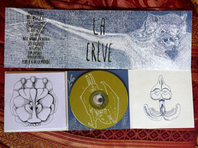

- On a enregistré une reprise de Raz-de-marée du groupe Escape pour une compilation à sortir de Stonehenge records. Yep
S/T, cd & K7 (juin 2014)
titres : photomaton / 103 forever bis / déménagement / communication / 26 ans d'écart / les amis / idées noires en boucle / les vacances / négative / cimenterie / hyperactivité / plus que de la musique
enregistré par Fantômas à la Boisière en octobre 2013 mixé et masterisé par Harry Potard au printemps 2014
pochette sérigraphiée au 103 à Grenoble en juin 2014
250 CD / 250 K7 |
||
|  |
Les objets crèvent, split disque avec Les Objets Meurent (mai 2011)
titres: montagnes russes / 103 forever bis / fluo dans le noir / idées noires en boucle / cimenterie
enregistré par raf et masterisé par mako à kraken durant les rencontres taenia solium
pochette sérigraphiée au 103 à Grenoble en juin 2014
50 CD |

|
Compilations
Stonehenge Records, Raz de Marée de Escape (2015)
http://www.stonehengerecords.com/
Sous-Sol, compilation de groupes grenoblois, Les Vacances (octobre 2012)
27 août 15: ?????
28 aoüt 15: Lyon?
- 27 août 15: concert concert concert
- 27 août 15: concert concert concert
- 27 août 15: concert concert concert
- 27 août 15: concert concert concert
- 27 août 15: concert concert concert
- 27 août 15: concert concert concert
- 27 août 15: concert concert concert
- 27 août 15: concert concert concert
- 27 août 15: concert concert concert
- 27 août 15: concert concert concert
[It is] notable that the Feynman lectures (3 volumes) write about all of physics in 1800 pages, using only 2 levels of hierarchical headings: chapters and A-level heads in the text. It also uses the methodology of sentences which then cumulate sequentially into paragraphs, rather than the grunts of bullet points. Undergraduate Caltech physics is very complicated material, but it didn't require an elaborate hierarchy to organize.